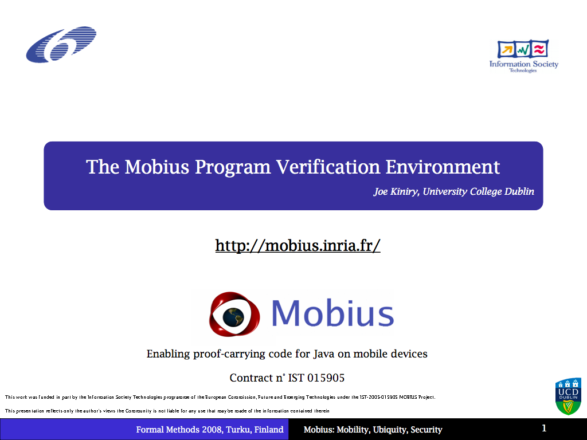

The Mobius Program Verification Environment
Joe Kiniry gave a talk entitled The Mobius Program Verification Environment at a special session on formal methods tools at Formal Methods 2008.
|  |
Abstract: The Mobius verification environment supports the development of specifications, programs and proofs of their security properties. It supports both source code and bytecode-level verification, and will be able to produce the output necessary for the generation of PCC certificates.
The Mobius PVE is a customized version of the Eclipse platform
that integrates a set of tools that support software
development using state-of-the-art formal methods and software
engineering techniques. The Mobius PVE supports the
specification and verification of JML-annotated Java programs
at the source code level as well as at the bytecode level
using logic- and type-based techniques and the Proof-Carrying
Code paradigm. The properties of particular interest include
security (e.g. data is secret and never leaked) and resource
guarantee properties (e.g. this method will never use more
than this much memory or that much CPU) as well as total
functional correctness. The Mobius PVE is thus, in a sense, a
prototype realization of the U.K. Grand Challenge 6 Verifying
Compiler, specialized to the domain of Java programs (HM05).
The Mobius PVE integrates theoretical and technical
best-practices, leveraging the hard work of many research
groups within, as well as outside of, the MOBIUS grant
consortium. Many Java software engineers use the Eclipse
development environment, together with plugins such as
FindBugs and PMD. The Mobius PVE is bundled with Eclipse and
these well-known third-party plugins so that Java developers
are presented with a pre-configured development environment
without the need to manually install each plugin. This talk summarizes the current and planned capabilities of the Mobius PVE and the Mobius Verification Bus. It is written for potential and current Mobius PVE users, verification researchers, and verification tool developers. |